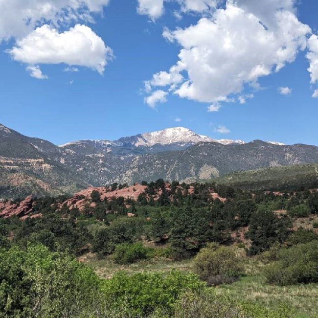

Welcome to Colorful Colorado!
All about my trip to Colorado
Last year I visited Colorado for the first time. I stayed in Colorado Springs and visited Manitou Springs to see Pikes Peak.
It was by far one of my favorite trips. I wish to go back very soon to do more exploring.

Click here to learn about the history of Pikes Peak
Things I did while in Colorado:
- Hiked Garden of the Gods
- Walked around downtown Colorado Springs to do some shopping and eat at local restaurants
- Rode the cog railway to the top of Pikes Peak in Manitou Springs
My experience of riding the cog railway to the top of Pikes Peak consisted of the following:
- Felt great the whole way up and enjoyed the amazing sights
- Suffered from altitude sickness and almost passed out once we reached the top
- Not thinking, I asked a group of hikers who had just made the trek all the way up by foot if they could spare some water
- Met some friendly locals who were on the cog with us that had a backpack full of remedies to help treat altitude sickness
Here are a few more pictures of the journey up to the top: